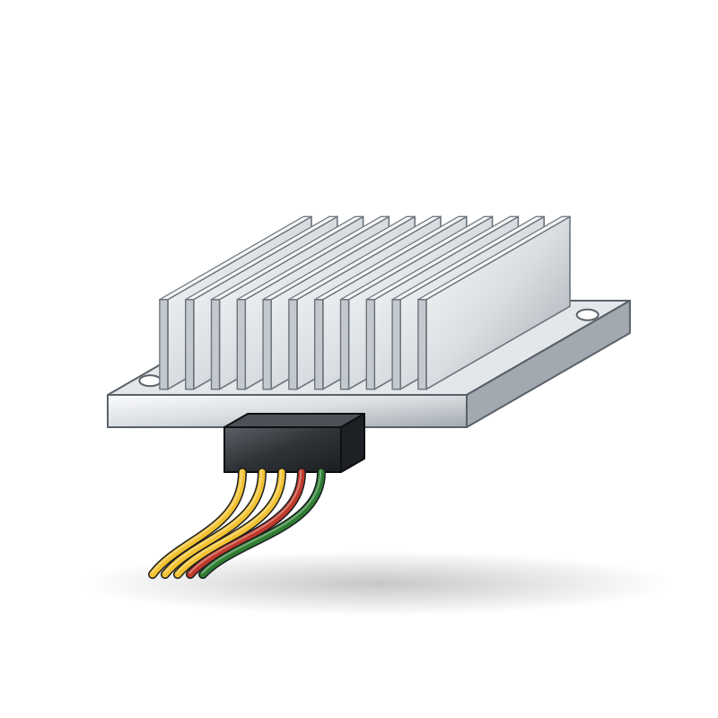
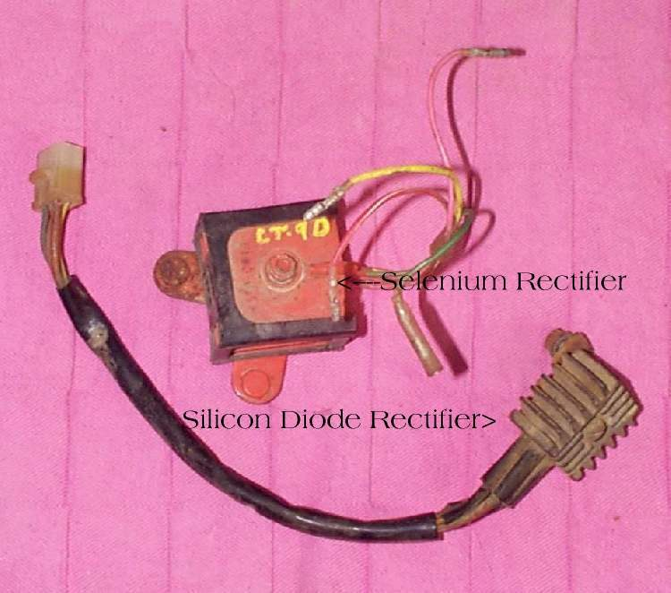
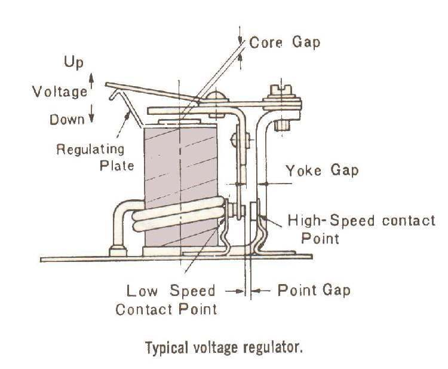
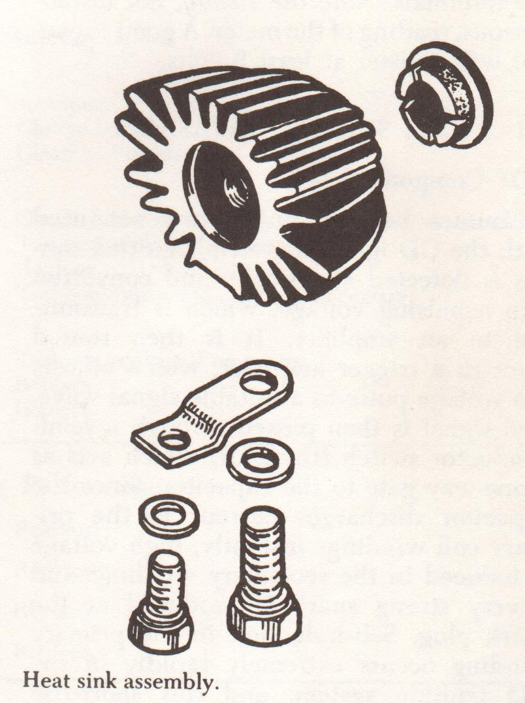

Spare parts / Yamaha / Mio / Fazzio / Regulator rectifier
Yamaha Mio / Fazzio regulator rectifier
Regulator rectifier for the Yamaha Mio / Fazzio: when to replace it, what it costs, where to buy it and how to fit it.

IllustrationWorkshop photos




Where to buy
- Google ShoppingSearch results for this partgoogle.com ↗
- eBaySearch results for this partebay.com ↗
- AliExpressSearch results for this partaliexpress.com ↗
- TokopediaSearch results for this parttokopedia.com ↗
- WemotoAftermarket specialist: Commuter and scooter parts incl. Asian 125swemoto.com ↗
Check the part number for your model year before you buy. Genuine (OEM) parts first; good aftermarket parts are fine for wear items. Links open shop searches; Motopedia earns nothing from them today and will say so here if that changes.
Fit it yourself
Fitment
| Model | Yamaha Mio / Fazzio |
| Type | Scooter |
| Engine | 125 cc |
| Final drive | CVT |
| Brakes | Disc and Drum |
| Main markets | ID/PH |
Questions
How often should I replace the regulator rectifier on a Yamaha Mio / Fazzio?
As a guide, Failure. The owner's manual for your model wins, and riding on dusty roads, with a passenger or with heavy loads shortens it.
How much does a Yamaha Mio / Fazzio regulator rectifier cost?
Typically US$ 15 to 120, depending on genuine or aftermarket and the shop. Prices are indicative.
Can I replace the regulator rectifier myself?
The job is rated 2 of 5 for difficulty. Follow the step-by-step guide and the values for your model.
More parts for the Yamaha Mio / Fazzio
 Illustration
Illustration Illustration
Illustration Illustration
Illustration Illustration
Illustration Illustration
Illustration Illustration
IllustrationAll parts for the Yamaha Mio / Fazzio → Regulator rectifier for other bikes →